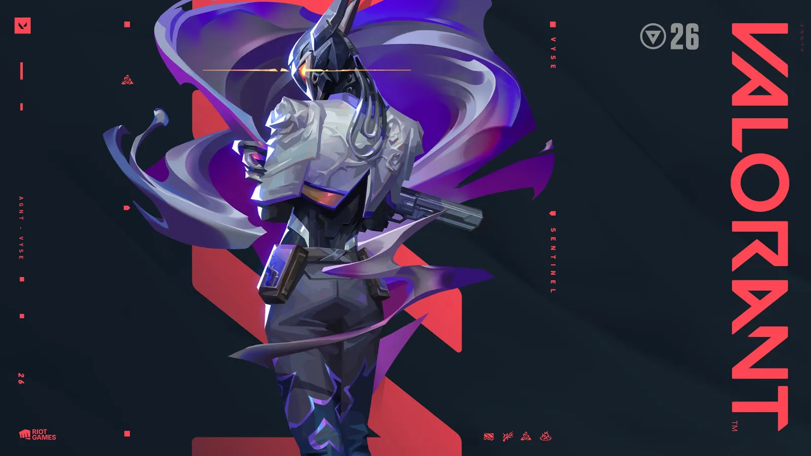

Способности Vyse
Как и другие агенты в Valorant, Vyse имеет три обычные способности и ультимативную: Razorvine (C), Shear (Q), Arc Rose (E) и Steel Garden (X). Все её способности направлены на защиту и отражение атак врагов, что соответствует её роли стража. Все способности нового агента можно увидеть в действии в видео ниже.Как открыть Vyse?
Напоминаем, что новые агенты становятся доступны не сразу для всех игроков.Чтобы получить возможность играть за Vyse, необходимо накопить 200 тысяч опыта в течение месяца. Если этого не сделать вовремя, придётся потратить 1 000 Valorant Points или 8 000 Kingdom Points.